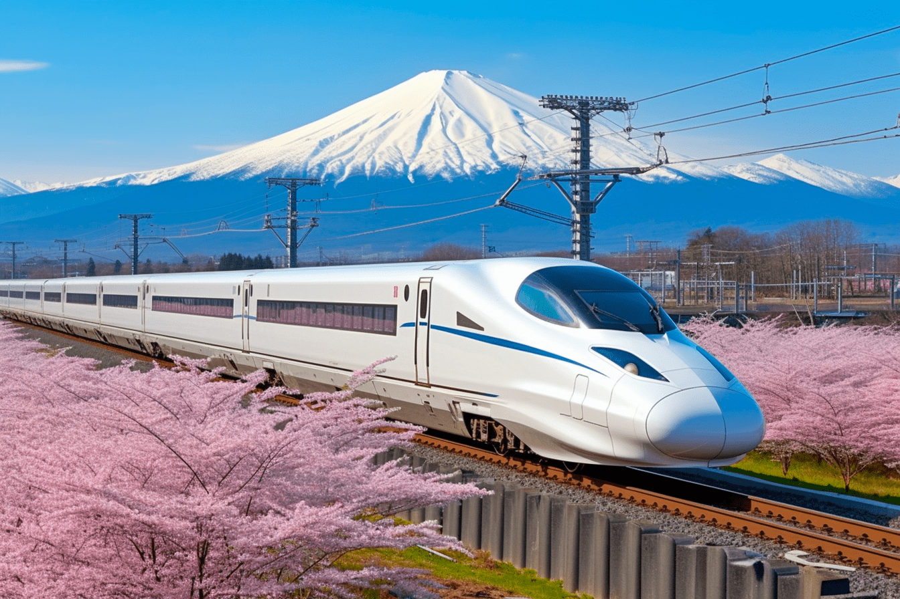

Shinkansen
Introduced in 1964, Japan’s Shinkansen, also known as the "bullet train," was the world’s first high-speed rail network and transformed travel in Japan by drastically cutting travel times between major cities. With a top speed of over 200 mph, it’s famous for its punctuality, with delays measured in seconds rather than minutes. Beyond speed, the Shinkansen is lauded for its safety record and sleek, aerodynamic design, inspiring train systems worldwide. This train line reflects Japan’s dedication to technological innovation and efficient transport, bringing futuristic travel into the present.
Characteristics
- Length: 250 meters
- Speed: Up to 130 km/h
- Year of Release: 2000
- Seating Capacity: 1000 passengers
- Route: Delhi to Mumbai